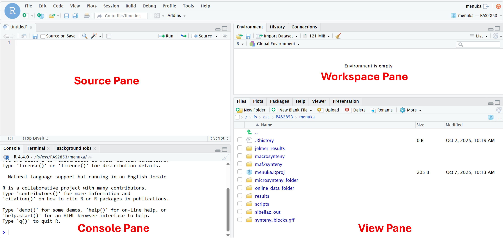
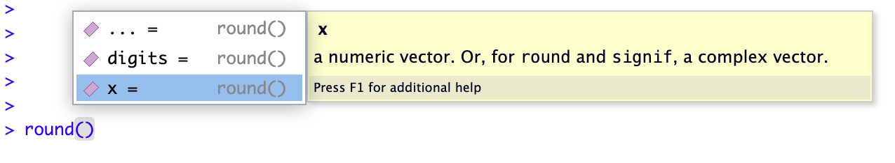

![]()
5 + 5[1] 10This homework is intended to get you introduce you to the basics of R & RStudio, because the week 4 lab will involve using R for RNA-Seq data analysis. As such, this is mostly intended for those with little to no experience with R, but:
If you run out of steam or time while trying to do this homework, you can stop after section 10 (R objects). But we will see examples of the topics covered in section 11-13 in the week 4 lab.
If you run into any issues when going through this material, or have questions, don’t hesitate to email Jelmer.
In this session, you will learn:
|>After initial processing high-throughput sequencing (HTS) data such as with command-line tools in the Unix shell, you’ll often want to perform statistical analysis and visualization of the results. The R language is probably the best environment for this.
On top of that, R is a great all-round tool to perform the analysis and visualization of any kind of data — together with Python, it is the leading data science language. Because it is free, open-source, cross-platform, and works with code rather than a graphical user interface (GUI), using R also helps with reproducibility of your research.
To run R, all you need is the R program with its “console” where you type commands. However, we will be running R inside a fancy editor called RStudio, which makes working with R much more pleasant!
While you can install and use R and RStudio on your own computer, for this course, you will use RStudio at OSC: you can run a version of RStudio at OSC within your browser by starting an Interactive App through OnDemand.
Interactive Apps and at the bottom, click RStudio Servercardinal4.4.0PAS28803any1LaunchConnect to RStudio Server button once it appearsIf you run out of time for this session, or want to spread this homework across multiple short sessions: you can always start a new session for as many sessions as you want, and you can modify the number of hours in the form as you see fit.
RStudio is divided into four panes, each of which have multiple tabs – we will highlight the most important ones here:
Top left: Source (or Editor)
Here, you can open and edit text documents like scripts (May be missing if you don’t have any documents open – if so, we’ll make it appear later)
Bottom left: Console
Here, you can type and execute R code
Top right: Workspace
The default Environment tab shows you what you have loaded in your R environment
Bottom right: View
The default tab in this pane is “Files”, a file explorer. Also commonly used are e.g. Plots, where plots appear, and Help, for help info.

To get some familiarity with working in R, you will start by simply using R as calculator. Type 5 + 5 in the console and press Enter:
5 + 5[1] 10R will print the result of the calculation, 10. The result is prefaced by [1], which is simply an index/count of output items – this can be helpful when many items are printed.
A couple more examples:
# Multiplication
6 * 8[1] 48# Division
40 / 5[1] 8This code will work with (like shown above) or without spaces between numbers and around operators like +. However, it is good practice to leave space between the number to improve the readability of your code.
The > sign in your console is the R prompt, indicating that that R is ready for you to type something. In other words, this is equivalent to the $ Shell prompt you’ve seen in the week 3 lab.
When you are not seeing the prompt, R is either busy (because you asked it to do a longer-running computation) or waiting for you to complete an incomplete command. If you notice that your prompt turned into a +, you typed an incomplete command – for example:
10 /+You can either try to finish the command or abort it by pressing Ctrl+C or Esc – go ahead and practice the latter now to get your prompt back after the above command.
Comments in R are also just like in the Unix shell: you can use # signs to comment your code, both inline and on separate lines:
# This line is entirely ignored by R
10 / 5 # This line contains code but everything after the '#' is ignored[1] 2In R, you can use comparison operators to compare numbers. When you do this, R will return either FALSE or TRUE (the so-called logical data type). For example:
Greater than and less than:
8 > 3[1] TRUE2 < 1[1] FALSEEqual to or not equal to – note that you need to use two equals signs == for the former:
7 == 7[1] TRUE# The exclamation mark in general is a "negator"
10 != 5[1] TRUEYou will commonly use these types of comparisons to check and subset/filter your data.
To do almost anything in R, you will use “functions”, which are the equivalent of Unix commands. R has over 3,000 functions that serve many different purposes.
You can recognize function calls by the parentheses. For example:
The equivalent to the Shell’s pwd is getwd() for “get working dir”:
# You will see a different output depending on your working directory
getwd()/users/PAS2880/jelmerInside those parentheses, you can provide arguments to a function1. For example, using setwd(), the equivalent to the Shell’s cd, to set your working dir, the argument is the file path to set as working dir:
setwd("/fs/scratch/PAS2880/ENT6703")Note that unlike in the Shell, you need to quote ("..") the file path! This is because in R, anything non-numeric that is not quoted is supposed to be a pre-existing “object” – more on those in a bit.
Consider the example below, where you pass the argument 6.53 to the function round():
round(6.53)[1] 7In most functions, including round(), arguments have names that can be used. The argument to round(), which represents the number to be rounded, has the name x, so you can also use:
# This is equivalent to the above:
round(x = 6.53)[1] 7Naming arguments is helpful in particular to avoid confusion when you pass multiple arguments to a function. For example, round() accepts a second argument, which is the number of digits to round to:
round(x = 6.53, digits = 1)[1] 6.5You could choose not to name these arguments, but that is not as easy to understand for someone reading your code – such as yourself two months later! 2
You can usually see which arguments a function takes by pausing after your type the function and its parenthesis, e.g. round():

Below, you’ll also learn about ways to get more extensive help information about a function.
help() and ?So how can you know what a function does, and which arguments it takes? The help() function and ? help operator in R offer access to documentation pages for R functions – as well as built-in data sets and other objects. For example:
?getwdThe output should appear in the Help tab of the bottom-left panel in RStudio and look something like this:

getwd() functionYou can also search for Help pages in that same RStudio Help tab.
R packages are basically add-ons or extensions to the functionality of the R language. These need to installed and loaded:
The function install.packages() installs an R package. This is a one-time operation – you won’t need to reinstall a package when you start a new R session later3.
The function library() will load an R package in your current R session. Every time you want to use a package in R, you need to load it – just like everytime you want to use MS Word on your computer, you need to open it.
To practice with this, you will now install several packages you’ll need in next week’s lab. Note that:
Unfortunately, on OSC, packages installation can take a while. Especially for large packages like these, so please be patient4.
A lot of messages may be printed to the console when installation is ongoing. Installation of a package is done when you get your prompt back. Unless you see clear messages that include words like “Error” and “Failed”, it should have succeeded (“Warning”s are typically okay).
Besides install.packages(), you’ll also use the BiocManager::install() function from to install some packages from Bioconductor, a separate repository that hosts many bioinformatics/omics-related R packages.
# Run these lines one-by-one to install the needed packages --
# First, the tidyverse, which is discussed at the end of this homework
install.packages("tidyverse")# [... lots of output ...]
# [The last lines should look something like this:]
** testing if installed package can be loaded from temporary location
** testing if installed package can be loaded from final location
** testing if installed package keeps a record of temporary installation path
* DONE (tidyverse)
The downloaded source packages are in
‘/tmp/RtmpS4n222/downloaded_packages’# This is needed to in turn install the next two packages:
# (Should take <1 minute to install)
install.packages("BiocManager")# We will use this for differential expression analysis:
# (May take 5-10 minutes to install)
BiocManager::install("DESeq2")# We will use this to create a data visualization called a volcano plot:
# (Should take <1 minute to install)
BiocManager::install("EnhancedVolcano")Test that you can load the packages – see the expected output below:
library(EnhancedVolcano)Loading required package: ggplot2Loading required package: ggrepellibrary(DESeq2)library(DESeq2)Loading required package: S4VectorsLoading required package: stats4Loading required package: BiocGenericsLoading required package: generics
Attaching package: 'generics'The following objects are masked from 'package:base':
as.difftime, as.factor, as.ordered, intersect, is.element, setdiff,
setequal, union
Attaching package: 'BiocGenerics'The following objects are masked from 'package:stats':
IQR, mad, sd, var, xtabsThe following objects are masked from 'package:base':
anyDuplicated, aperm, append, as.data.frame, basename, cbind,
colnames, dirname, do.call, duplicated, eval, evalq, Filter, Find,
get, grep, grepl, is.unsorted, lapply, Map, mapply, match, mget,
order, paste, pmax, pmax.int, pmin, pmin.int, Position, rank,
rbind, Reduce, rownames, sapply, saveRDS, table, tapply, unique,
unsplit, which.max, which.min
Attaching package: 'S4Vectors'The following object is masked from 'package:utils':
findMatchesThe following objects are masked from 'package:base':
expand.grid, I, unnameLoading required package: IRangesLoading required package: GenomicRangesLoading required package: GenomeInfoDbLoading required package: SummarizedExperimentLoading required package: MatrixGenericsLoading required package: matrixStats
Attaching package: 'MatrixGenerics'The following objects are masked from 'package:matrixStats':
colAlls, colAnyNAs, colAnys, colAvgsPerRowSet, colCollapse,
colCounts, colCummaxs, colCummins, colCumprods, colCumsums,
colDiffs, colIQRDiffs, colIQRs, colLogSumExps, colMadDiffs,
colMads, colMaxs, colMeans2, colMedians, colMins, colOrderStats,
colProds, colQuantiles, colRanges, colRanks, colSdDiffs, colSds,
colSums2, colTabulates, colVarDiffs, colVars, colWeightedMads,
colWeightedMeans, colWeightedMedians, colWeightedSds,
colWeightedVars, rowAlls, rowAnyNAs, rowAnys, rowAvgsPerColSet,
rowCollapse, rowCounts, rowCummaxs, rowCummins, rowCumprods,
rowCumsums, rowDiffs, rowIQRDiffs, rowIQRs, rowLogSumExps,
rowMadDiffs, rowMads, rowMaxs, rowMeans2, rowMedians, rowMins,
rowOrderStats, rowProds, rowQuantiles, rowRanges, rowRanks,
rowSdDiffs, rowSds, rowSums2, rowTabulates, rowVarDiffs, rowVars,
rowWeightedMads, rowWeightedMeans, rowWeightedMedians,
rowWeightedSds, rowWeightedVarsLoading required package: BiobaseWelcome to Bioconductor
Vignettes contain introductory material; view with
'browseVignettes()'. To cite Bioconductor, see
'citation("Biobase")', and for packages 'citation("pkgname")'.
Attaching package: 'Biobase'The following object is masked from 'package:MatrixGenerics':
rowMediansThe following objects are masked from 'package:matrixStats':
anyMissing, rowMedianslibrary(tidyverse)── Attaching core tidyverse packages ──────────────────────── tidyverse 2.0.0 ──
✔ dplyr 1.1.4 ✔ readr 2.1.5
✔ forcats 1.0.1 ✔ stringr 1.5.2
✔ lubridate 1.9.4 ✔ tibble 3.3.0
✔ purrr 1.1.0 ✔ tidyr 1.3.1
── Conflicts ────────────────────────────────────────── tidyverse_conflicts() ──
✖ lubridate::%within%() masks IRanges::%within%()
✖ dplyr::collapse() masks IRanges::collapse()
✖ dplyr::combine() masks Biobase::combine(), BiocGenerics::combine()
✖ dplyr::count() masks matrixStats::count()
✖ dplyr::desc() masks IRanges::desc()
✖ tidyr::expand() masks S4Vectors::expand()
✖ dplyr::filter() masks stats::filter()
✖ dplyr::first() masks S4Vectors::first()
✖ dplyr::lag() masks stats::lag()
✖ BiocGenerics::Position() masks ggplot2::Position(), base::Position()
✖ purrr::reduce() masks GenomicRanges::reduce(), IRanges::reduce()
✖ dplyr::rename() masks S4Vectors::rename()
✖ lubridate::second() masks S4Vectors::second()
✖ lubridate::second<-() masks S4Vectors::second<-()
✖ dplyr::slice() masks IRanges::slice()
ℹ Use the conflicted package (<http://conflicted.r-lib.org/>) to force all conflicts to become errorsFor now, don’t worry about the “conflict” warnings shown above.
You should mostly write and save your R code in so-called “R scripts”, which are text files with R code. This helps keep track of what you’ve been doing and makes it easier to modify and rerun things.
Create and open a new R script by clicking File (top menu bar) > New File > R Script.
Save this new script right away by clicking File > Save As. In the dialog box, you can save it right in the suggested folder, or you can make a new folder for this course. Regardless, save the script as homework.R (the extension for R scripts is .R).
But isn’t a hassle to have to copy-paste code from a script to the console? Well, RStudio makes this pretty easy: to execute code from the script in the the console, press Ctrl + Enter on Windows, or Cmd + Return on a Mac. Practice that after typing the following in the script:
# Type this in the script, then run it with Ctrl + Enter (or Cmd + Return)
5 + 5[1] 10Objects are a key concept in R and other programming languages. They can store data and values that you can manipulate and analyze. It takes some time to get used to working with -and conceptualizing- objects, but you will get the hang of it with some practice.
You can assign one or more values to a so-called “object” with the assignment operator <-:
# Assign the value 250 the object 'length_cm':
length_cm <- 250
# Now print the value of this object to screen simply by typing its name:
length_cm[1] 250Another example:
conversion <- 2.54
conversion[1] 2.54Importantly, you can use objects as if you had typed their values directly:
length_cm / conversion[1] 98.4252Some pointers on object names:
length_inch is different from Length_Inch!length_cm.x2 is valid but 2x is not.Assign the value 20 to the object num_1, and the value 15 to num_2
Click to see the solution
num_1 <- 20
num_2 <- 15Compute the sum of num_1 and num_2
Click to see the solution
num_1 + num_2[1] 35Assign the result of num_1 minus num_2 to a new object called difference. What is the value of difference?
Click to see a solution
difference <- num_1 - num_2
difference[1] 5Which of the following are valid object names in R?
2nd_valuevalue_2total valueTotalValueClick to see a solution
The valid object names are:
value_2TotalValueObject names cannot start with a number and cannot contain spaces (so a and c options are invalid).
R has several so-called “data structures”, distinct object types to store different kinds of data. The most basic of these is the vector, which is simply a collections of one or more items.
You’ve already created a few vectors, as the single-item num_1 etc. objects above were vectors! So let’s see something new here: a common way to make vectors with multiple elements is with the c (combine) function:
# longer_vector will contain 3 items:
longer_vector <- c(10, 20, 30)
longer_vector[1] 10 20 30For ranges of integers (whole numbers), you can also use the colon operator :
# longer_vector will contain 10 items:
sequence_vector <- 1:10
sequence_vector [1] 1 2 3 4 5 6 7 8 9 10R has many functions that provide information about vectors and other types of objects, such as to get the number of items, or the mean or sum of the values of these items5:
# Get the number of items:
length(longer_vector)[1] 3# Get the the mean (average) across all elements:
mean(longer_vector)[1] 20# Get the sum of all elements:
sum(longer_vector)[1] 60You can extract items from objects like vectors using “bracket notation” – get the second item with [2]:
longer_vector[2][1] 20Or get the first and third items with [c(1, 3)]:
longer_vector[c(1, 3)][1] 10 30Data frames are a key R data structure that contain tabular data – data organized in rows and columns, similar to spreadsheets. An example is the iris data frame that comes shipped with R, which contains measurements for three different species of iris.
You can take a look at the first few rows of this data frame using the head() function:
# Note that each row represents one individual iris flower:
head(iris) Sepal.Length Sepal.Width Petal.Length Petal.Width Species
1 5.1 3.5 1.4 0.2 setosa
2 4.9 3.0 1.4 0.2 setosa
3 4.7 3.2 1.3 0.2 setosa
4 4.6 3.1 1.5 0.2 setosa
5 5.0 3.6 1.4 0.2 setosa
6 5.4 3.9 1.7 0.4 setosaSepal.Length, Sepal.Width, Petal.Length, Petal.Width, and Species. The 1 to 6 on the left are the row names, in this case a simple numbering of the rows.
For data frames, the View() function is also neat, as it opens the data frame in a spreadsheet-like viewer – try it!
View(iris)You can extract individual columns from a data frame using the $ operator:
# Extract the 'Sepal.Width' column from the 'iris' data frame:
iris$Sepal.Width [1] 3.5 3.0 3.2 3.1 3.6 3.9 3.4 3.4 2.9 3.1 3.7 3.4 3.0 3.0 4.0 4.4 3.9 3.5
[19] 3.8 3.8 3.4 3.7 3.6 3.3 3.4 3.0 3.4 3.5 3.4 3.2 3.1 3.4 4.1 4.2 3.1 3.2
[37] 3.5 3.6 3.0 3.4 3.5 2.3 3.2 3.5 3.8 3.0 3.8 3.2 3.7 3.3 3.2 3.2 3.1 2.3
[55] 2.8 2.8 3.3 2.4 2.9 2.7 2.0 3.0 2.2 2.9 2.9 3.1 3.0 2.7 2.2 2.5 3.2 2.8
[73] 2.5 2.8 2.9 3.0 2.8 3.0 2.9 2.6 2.4 2.4 2.7 2.7 3.0 3.4 3.1 2.3 3.0 2.5
[91] 2.6 3.0 2.6 2.3 2.7 3.0 2.9 2.9 2.5 2.8 3.3 2.7 3.0 2.9 3.0 3.0 2.5 2.9
[109] 2.5 3.6 3.2 2.7 3.0 2.5 2.8 3.2 3.0 3.8 2.6 2.2 3.2 2.8 2.8 2.7 3.3 3.2
[127] 2.8 3.0 2.8 3.0 2.8 3.8 2.8 2.8 2.6 3.0 3.4 3.1 3.0 3.1 3.1 3.1 2.7 3.2
[145] 3.3 3.0 2.5 3.0 3.4 3.0This kind of operation will return a vector – which can be subsetted as well:
# Extract the 2nd to 5th items from the 'Sepal.Width' column:
iris$Sepal.Width[2:5][1] 3.0 3.2 3.1 3.6Finally, you’ll learn a little about a versatile family of R packages designed for data science called the “tidyverse”. The tidyverse is quite large and includes the famous ggplot2 package for data visualization – we’ll barely scratch the surface here, but this should already give you some useful tools.
read_tsv() to read tabular dataThe read_tsv() function reads a TSV (Tab-Separated Values) file into a dataframe, taking the path to the file as its main argument – here, read the sample metadata file used in next week’s lab:
meta <- read_tsv("/fs/scratch/PAS2880/ENT6703/data/meta/metadata.tsv")Rows: 22 Columns: 3
── Column specification ────────────────────────────────────────────────────────
Delimiter: "\t"
chr (2): sample_id, treatment
dbl (1): dpi
ℹ Use `spec()` to retrieve the full column specification for this data.
ℹ Specify the column types or set `show_col_types = FALSE` to quiet this message.Some info about how it interpreted the data is printed, especially about the data types of different columns (see the box below). Take a look at the resulting data frame meta:
meta# A tibble: 22 × 3
sample_id dpi treatment
<chr> <dbl> <chr>
1 ERR10802864 1 cathemerium
2 ERR10802867 1 cathemerium
3 ERR10802870 1 cathemerium
4 ERR10802866 1 control
5 ERR10802869 1 control
6 ERR10802863 1 control
7 ERR10802871 1 relictum
8 ERR10802874 1 relictum
9 ERR10802865 1 relictum
10 ERR10802868 1 relictum
# ℹ 12 more rowsThe data frame is a so-called “tibble”, as the top of the output above says. This is a modern take on data frames provided by the tidyverse. Tibbles behave mostly like data frames, but have some nice features mostly in the way they are printed to screen.
For example, the “data types” of columns are shown at the top of the output above, where chr means character (text data) and dbl means double (numeric data; other data types exist as well).
select() to pick columnsThe select() function subsets a data frame by including/excluding certain columns. By default, it only includes the columns you specify:
select(.data = meta, sample_id, treatment)# A tibble: 22 × 2
sample_id treatment
<chr> <chr>
1 ERR10802864 cathemerium
2 ERR10802867 cathemerium
3 ERR10802870 cathemerium
4 ERR10802866 control
5 ERR10802869 control
6 ERR10802863 control
7 ERR10802871 relictum
8 ERR10802874 relictum
9 ERR10802865 relictum
10 ERR10802868 relictum
# ℹ 12 more rowsAbove, the first argument was the data frame, whereas the other arguments were the (unquoted!) names of columns to be kept. The output is a new, modified dataframe. In the example above, this data frame was simply printed to the screen – but as you’ll see later, it can be stored too.
filter() to pick rows (observations)The filter() function outputs only those rows that satisfy one or more conditions, similar to Filter functionality in Excel. For example, to only keep rows for the 1 timepoint:
filter(.data = meta, dpi == 1)# A tibble: 10 × 3
sample_id dpi treatment
<chr> <dbl> <chr>
1 ERR10802864 1 cathemerium
2 ERR10802867 1 cathemerium
3 ERR10802870 1 cathemerium
4 ERR10802866 1 control
5 ERR10802869 1 control
6 ERR10802863 1 control
7 ERR10802871 1 relictum
8 ERR10802874 1 relictum
9 ERR10802865 1 relictum
10 ERR10802868 1 relictum |>)It’s common to want to use several consecutive functions to wrangle a dataframe into the format you want. For example, you may want to first select() one or more columns, then filter() the resulting dataframe. You could do that as follows:
meta_sel <- select(.data = meta, sample_id, dpi)
filter(.data = meta_sel, dpi == 1)# A tibble: 10 × 2
sample_id dpi
<chr> <dbl>
1 ERR10802864 1
2 ERR10802867 1
3 ERR10802870 1
4 ERR10802866 1
5 ERR10802869 1
6 ERR10802863 1
7 ERR10802871 1
8 ERR10802874 1
9 ERR10802865 1
10 ERR10802868 1You could go on along these lines, successively creating new objects that you then use for the next step. But there is a more elegant way of dong this, directly sending (“piping”) output from one function into the next function with the pipe operator |> (a vertical bar | followed by a greater-than sign >).
Let’s start by seeing a reformulation of the code above with pipes:
meta |>
select(sample_id, dpi) |>
filter(dpi == 1)# A tibble: 10 × 2
sample_id dpi
<chr> <dbl>
1 ERR10802864 1
2 ERR10802867 1
3 ERR10802870 1
4 ERR10802866 1
5 ERR10802869 1
6 ERR10802863 1
7 ERR10802871 1
8 ERR10802874 1
9 ERR10802865 1
10 ERR10802868 1What happened here? You took the meta data frame, sent (“piped”) it into the select() function, whose output in turn was piped into the filter() function. You can think of the pipe as “then”: take meta, then select, then rename.
When using the pipe, you no longer specify the input with the .data argument, because the function now gets its input data via the pipe. Using pipes involves less typing and is more readable than successive assignments.
For code readability, start a new line after every pipe |> and indent subsequent lines, as seen above.
Use a “pipeline” like above to output a data frame with two columns (sample_id and treatment) only for the cathemerium treatment. How many rows does your output data frame have?
meta |>
select(sample_id, treatment) |>
filter(treatment == "cathemerium")# A tibble: 7 × 2
sample_id treatment
<chr> <chr>
1 ERR10802864 cathemerium
2 ERR10802867 cathemerium
3 ERR10802870 cathemerium
4 ERR10802882 cathemerium
5 ERR10802875 cathemerium
6 ERR10802879 cathemerium
7 ERR10802883 cathemeriumThe output data frame has 7 rows and 2 columns: note that “7 x 2” is helpfully shown at the top of the output in the console.
The following RStudio keyboard shortcut will insert a pipe symbol: Ctrl/Cmd + Shift + M.
However, by default this (still) inserts an older pipe symbol, %>%. To make RStudio insert the |> pipe symbol with this keyboard shortcut:
Tools > Global Options > Code tab on the rightOK at the bottom of the options dialog box to apply the change and close the box.
In R, there is no distinction between options and arguments like with Shell commands.↩︎
And unlike unnamed arguments, named arguments can be presented in any order you like.↩︎
This also applies at OSC↩︎
This should be much faster on your own computer.↩︎
The latter two only with numeric vectors - as vectors can also contain text.↩︎